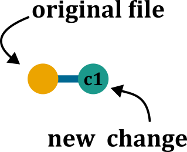
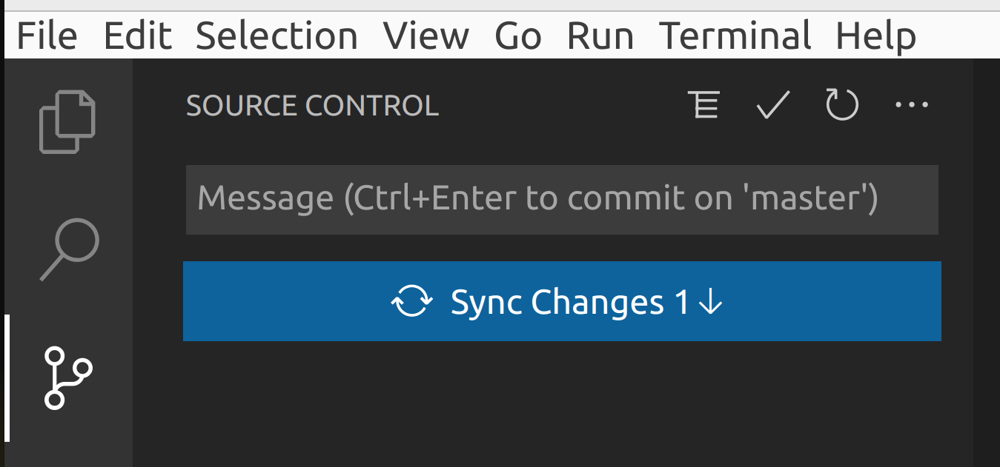

Evolution

Open Science

A better view

The Journey

Ring a bell ?

What is Version Control? 🤔

It is all about keeping track of changes 📓✍️
Git
- local software
- keep track of changes of files

GitHub
- host server
- store (git) the data
- project management, collaboration, publishing

Git/GitHub setup AKA “git hell”

Follow instructions in Version Control - git hell (a separate presentation).
Getting all the necessary software installed, configured, and playing nicely together is honestly half the battle … Brace yourself for some pain
Basic vocabulary
- Every such project is called repository (ie a repo)
- Your local repository is called local
- Your online repository, is called remote

Git init (project first)
Activate git for a repo
Create new project with git tracking

For existing project
usethis::use_git()Create new project with git tracking
usethis::create_project("<DIRECTORY>")
# switch to the new project
usethis::use_git()For existing project
git initCreate new project with git tracking
git init <DIRECTORY>Git integration is automatic in Source control panel

Git clone (repo first)
Copy (download) for remote repo to local machine
Example of online repo: OndrejMottl/VersionControl_DataStewards_Sep2024

usethis::create_from_github(
repo_spec = "https://github.com/<OWNER>/<REPO>.git",
destdir = "<DIRECTORY>",
fork = FALSE
)git clone https://github.com/<OWNER>/<REPO>.git <DIRECTORY>Open Command Palette (Ctrl+Shift+p)
Paste in URL: "https://github.com/<OWNER>/<REPO>.git"
a commit
A commit is a record of a change
If you create or edit a file in your repository and save the changes, you need to record your change via a commit
Chess analogy?

Chess move diary:
- Bc4 (Bishop to c4)
- Nf3 (Knight to f3)
- Qc7 (Queen to c7)
a commit

Pawn to d4

Edit line 32 of file A
3 states of a file


Staging changes
Make a change to a file and save it. Now stage the change:

- The red icon indicates removed files.
- The yellow icon indicates modified files.
- The green icon indicates added files.

- two yellow
??indicates adding a file - a blue
Mindicates edit a file that has already been committed - a red
Dindicates deleting a file
git add <FILE>
a first commit
Commit (record) staged changes:


git commit -am "commit message"
Review history

Dissecting a commit
SHA - unique identifier
Author - who has done this?
Date - when was this done?
Message - description of what has been done
Stats - what has changed?
Commit message
Commits are quick and cheap. Therefore:
- commit often (!)
- provide useful commit messages.

Commit history

remote

remote
Now we need to sync chnages with the remote using PUSH
Add a remote to existing local repo (only once):

Push local to remote (GitHub):

Add a remote to existing local repo (only once):
usethis::use_github(protocol = "https")Push local to remote (GitHub):

Add a remote to existing local repo (only once):
git remote add origin https://github.com/<OWNER>/<REPO>Push local to remote (GitHub):
git pushAdd a remote to existing local repo (only once):

Push local to remote (GitHub):

A GitHub repo

update local- PULL

update local- PULL

update local- PULL
Now we need to sync chnages from the remote to local the using PULL
Pull from remote (GitHub) to local

Pull from remote (GitHub) to local
Pull from remote (GitHub) to local:
git pullPull from remote (GitHub) to local

Merge conflict 💩💩💩

A merge conflict can occur when you are changing the same line in one file differently.
Ups! I have made a mistake 😮
How to undo last commit?
Variant A: I commited but NOT pushed yet.

RStudio has a range of possibilities to work with Git and GitHub as shown in this tutorial. The Terminal (NOT console) has more commands and options and will be handy for trouble shooting.
git reset --soft HEAD@{1}git reset --soft HEAD@{1}Open Command Palette (Ctrl+Shift+p)
Write Git: Undo Last Commit
Ups! I have made a mistake 😮
How to undo last commit?
Variant B: I commited but AND pushed already.
Right-click on the commit you would like to undo to and select Revert a commit.
We need the Terminal (NOT console) again.
Copy the SHA of the last commit
git reset --hard <SHA>Copy the SHA of the last commit
git reset --hard <SHA>In the Source control panel -> COMMITS section -> Right-click on the commit you want to revert to -> Select the Reset Current Branch to Previous Commit

Branches

Branches

Make a branch


Copy the SHA of the last commit
git branch <BRANCH-NAME>
Switching between branches (checkout)
The default branch is called main or master
‼️ Make sure that you have all changes commited before switching ‼️


Copy the SHA of the last commit
git checkout <BRANCH-NAME>
Merging branches

Merging branches

Pull Request (PR)
Request to merge a branch

Pull Request - create
After you push new branch, you should have a green button Compare & pull request

Pull Request - components

Pull Request - Overview
Now you can more commits, (add Comment to start discussion), or merge

Pull Request - review
A tool to review suggested changes

Collaboration

Pull Request - review

Merging strategies
Merge commit

Squash & Merge

Rebase & Merge

Delete branch
We can delete branch directly on GitHub after merging

Delete branch
We can also delete branch before merging

We need the Terminal (NOT console) again.
To delete a local branch
git branch -d <BRANCH-NAME>To delete a remote branch
git push origin --delete <BRANCH-NAME>To delete a local branch
git branch -d <BRANCH-NAME>To delete a remote branch
git push origin --delete <BRANCH-NAME>Open Command Palette (Ctrl+Shift+p)
Select Git: Delete branch …
Bonus for R users

This presentation